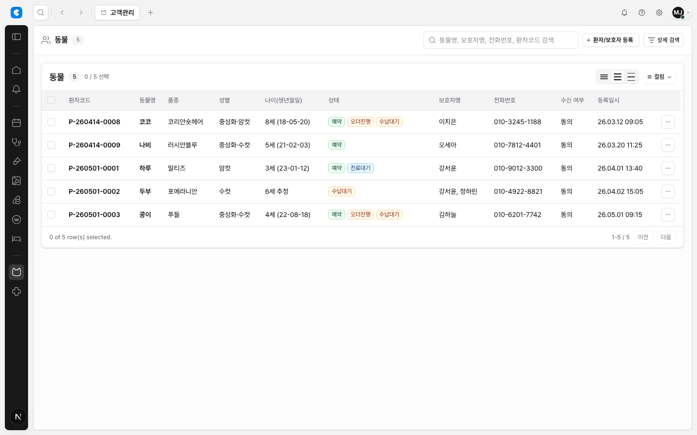

CLAiR Table Cell Text Wrapping Research
CLAiR 테이블 셀 텍스트는 기본 1행으로 간다. 긴 텍스트는 의미 손실이 큰 컬럼에 한해 2행 preview를 허용하고, 전체 내용은 tooltip, popover, side detail, drawer, editor에서 읽게 한다. 자동 행 높이는 dense EMR grid의 기본값으로 쓰지 않는다.
CLAiR Evidence




Lazyweb References


Official References
- MUI X row height and MUI X cells
- AG Grid row height and text wrapping
- Ant Design Table ellipsis column option
- TanStack Table column sizing
Recommendation
one-line을 기본 text mode로 둔다.two-line-if-long은 Order명, 진단명, 입실 메모, 복약지도처럼 의미 손실이 큰 컬럼에만 둔다.always-multiline은 dense table body 밖의 detail/editor surface에만 쓴다.- 긴 텍스트는 tooltip만 의존하지 말고 side detail, drawer, popover, editor 중 하나로 full text 경로를 둔다.
- 공유
EmrTableCellText,EmrTableBadgeStack,EmrLongTextPreviewprimitive를 만든다.